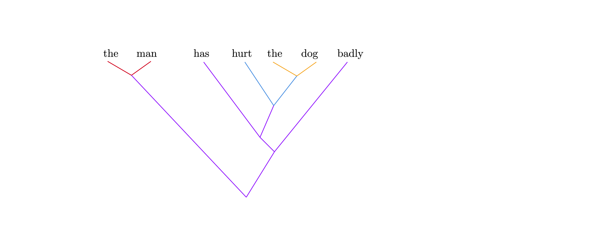

如果生成语法的derivational tree中的一个head和一个成分在同一个projection中，就认为它们之间存在依存关系（例如，在Distributed Morphology中，Trans head和宾语有依存关系，T head和主语有依存关系）；这两者的语音实现之间有同样的依存关系（例如，在英语中，Trans head和T head全都附着到了动词上面，因此动词和主语、宾语都有依存关系）。
选取全部依存关系的一个（一般不包括cross-serial dependency的）子集，我们也可以得到成分关系的一个定义。但是这个成分关系和常见的成分句法标注经常是不同的；两者的关系见后面的讨论。
连接在同一个成分上的依存关系要排成一个序列，在越高的位置处产生的依存关系在这个序列中的位置也越高。例如，动词-主语这个依存关系来自T-SpecTP依存关系，而动词-宾语依存关系来自Trans-SpecTransP依存关系，所以前者排在后者前面。
vP domain, TP domain, CP domain这些动词体现在依存关系的分组上面：在同一个domain中建立的依存关系分为一组，以下也称为domain。
(phrasal) movement等价于一个成分的一部分依存关系线和其它成分的依存关系线发生交叉。
以上序列可以把probe-goal机制、government and binding、movement、phase theory啥的东西全都变成全然关于表层形式的理论。
应当注意上述的依存关系是成分到成分的，是不是要像正经的依存语法一样依存关系全都设置成词和词之间的可以自己看着办。如果我们给每个成分指定一个中心语，那么从成分到成分的依存关系就能够推导出词到词的依存关系，我们的语法就彻底变成（含有大量成分语法信息）的依存语法了。这个中心语的设置很大程度上是任意的（比如说介词有一定谓词性，但是也可以看成格的句法标记，那么你是把N还是把P当成中心语呢？好像CoreNLP真的就是把介词当成格标记的），有就行了（generative morphosyntax的树里面的head一般都是好几个head缩合在一起的，所以很难拿生成语法的理论去推什么是表层形式的中心语）。
如前所述，由于哪些东西构成一个成分本身也是通过从derivational tree导出的依存关系定义的，word-to-constituent依存关系可以写成从word到constituent中的位置最高的依存关系的一条弧线，如果constituent中的依存关系能够自然地定义这个constituent的中心语——当然是可以的，因为这个依存关系本身也是一个word-constituent关系，把它的word设成前面说的那个constituent的中心语就可以了。 但是，这样的中心语的定义和常见的依存标注中中心语的定义是不一致的。 在已有的依存标注中更常见的做法是把中心语设置成一个domain中语义上最“核心”的词，比如说CP-TP-vP层中就设置成动词；当然这里还是存在介词算什么的这种问题。
我们来看一个例子。下面的句子
The man has hurt the dog badly
的derivation tree造成的依存关系如下图所示：

其中我们用红色和橙色来标记DP domain，用蓝紫色和蓝灰色来标记CP-TP-vP domain。其中，从has出发的关系按照其在derivational tree中的位置，从高到低是：
- has和the man的依存关系来自T head和SpecTP的关系
- has和badly的依存关系来自Adv-Manner head和SpecAdvMannerP之间的关系，这里采用cartography的说法，认为副词通过TP层中的functional head的specifier引入
- has和hurt的依存关系来自vP套在TP里面这个事实
从hurt出发的关系为：
- hurt和the man的依存关系是v和Spec-vP的关系
- hurt和the dog的依存关系来自Trans head和SpecTransP的关系，这里采用Distributed Morphology的说法，认为及物动词宾语是通过TransP引入的
上图实际上意味着一些老生常谈的理论争议实际上是不同的notation而已。它们以不同的方式展示这些依存关系。
例如，考虑以下看起来很合理的转换规则：
- 抹去依存关系中的序号，只保留domain group
- 按照domain group划分成分
- 抹去全部依存关系
这会得到下图：

我们看到把助动词和主动词划分在一个成分里是有道理的；这里badly和has hurt形成了一个不连续成分。
另一方面，注意到the man和the dog的所有外部的依存关系都来自has, hurt和badly形成的那个domain，即两者存在严格的嵌套关系，我们可以认为这两个domain的嵌套关系应该在表层的句法树中得到反映，那么has, hurt和badly就应该在一个平面上，于是有

再考虑如下导出依存语法的方法
- 抹去依存关系中的序号
- 在一个domain中指定一个中心语，将同一个domain中的依存关系弧线的方向统一改为指向这个中心语的
- 从外部连接到一个domain内部的依存关系全部改为连接到这个domain的中心语上面
- 抹去所有domain
按照这个规则，刚才那句话中，蓝紫色线3号线的箭头方向要倒置，改成从hurt指向has，蓝紫色1，2号线和蓝灰色1，2号线如果连接在has上面，则接在has上的端子全部要挪到hurt上。
类似的，红色和橙色线的箭头要倒置，蓝灰色2号线、蓝紫色1号线的末端要挪到名词上而不是determiner上，于是这就给出（为了区分依存关系的来源，虽然domain信息被抹去了，我们仍然保留线条的色彩）

这和CoreNLP给出的依存树完全一致。
再考虑如下转化规则：
- 选取一个子依存关系，确保每个词都能够被连接进去，但是不存在cross-serial dependency
- 自下而上构建成分关系：
- 在所有domain的依存关系中，较低domain的依存关系认定为较“低”，在同一个domain的依存关系中，较低的依存关系认定为较“低”；由最低的两个依存关系连接在一起的词构成一个成分；
- 如果一个由级依存关系确定的成分中的某个词和另一个词被一个级依存关系连接，那么和也构成一个成分
- 抹去依存关系信息
在上面的句子中，蓝灰色1号线会被丢弃；使用剩下的依存关系，显然the man和the dog是第一批被识别出来的成分；然后hurt the dog，has hurt the dog，has hurt the dog badly，the man has hurt the dog badly依次被识别出来。 这就产生了如下的二分叉的ICA树（同样，虽然所有依存关系都被抹去了，我们还是在图上保留了色彩来标记各个成分关系来自哪个依存关系）： 
对VSO语言，非常可惜，虽然V-S依存关系和V-O依存关系有高低之分，但是没法用二叉树表示这个信息。
有些书，比如说剑桥英语语法，会在每个non-terminal node上面加注这个node的功能（比如说“主语”）。这可以通过保留每个成分关系对应的依存关系来做到。比如说，将the man和has hurt the dog badly连接在一起的成分关系对应着蓝紫色1号线，即SpecTP-T的关系，因此我们可以在将the man和has hurt the dog badly连接在一起的成分关系上注明：“subject-predicate”。 然后可以很容易地变更中心语的定义，因为此时不再需要挪动依存关系的头尾了。
形态是模糊不清的句法：一个domain中的若干个functional head融合在一起，被整体语音实现。将句法树的一部分当成形态，在最开始的、标记了依存关系的高低和domain的依存关系中将一部分词“缩合”，将这几个词涉及的依存关系的头尾合并在一起，然后把这部分词的可能取值用所有涉及这几个词的依存关系到可能的取值范围的映射——也就是word paradigm——给出。word paradigm可以是多级的：可以像拉丁语变位表一样，一步到位地把一个词的环境（也就是连接在其上的依存关系）到这个词的形式的映射用表格表示，也可以像现在的英语语法一样，这个、这个、这个地方用现在分词，然后最后的写成表格的paradigm就五个词形。
这样推下来得到的关于表层形式的理论看着其实就是所谓的“类型学中的语法”，传统语法不像传统语法，但是又不是任何一种理论语言学语法模型。依存关系的高低体现某种“前后”关系，domain体现不同成分的远近，movement就是long range dependency，依存关系就是“grammatical relation”。 Dixon管这套东西叫basic linguistic theory，不过他把所有不遵从他的分析的人都指责为万恶的“formalist”。
我们也可以看到所谓的"describe a language in its own term"的口号和生成语法用统一的formalism描述不同语言是不矛盾的，正如凝聚态物理中简单的库仑相互作用在不同晶格上导致完全不同的地能有效理论一样。VSO的三叉树和SVO的二叉树可以说是describe a language in its own term的一个例子，但是它们完全可以看成句法Merge和少许形态学操作导致的不同有效理论。